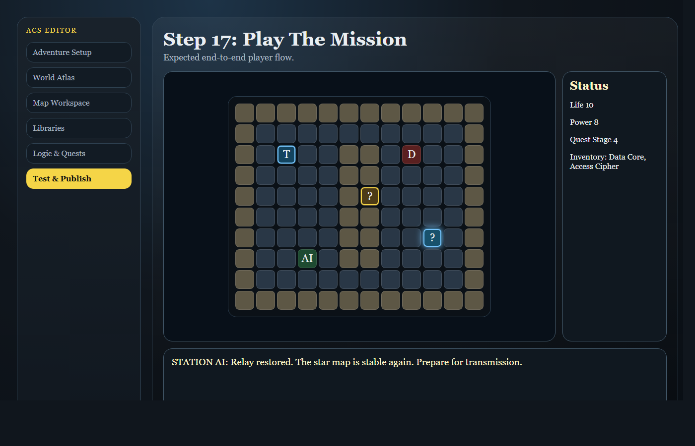

This guide describes the current ACS Milestone 32D editor and how to
use it to build, test, publish, and preview AI-assisted adventure
proposals from the live apps/web/editor.html interface.
This guide matches the current implementation in
apps/web/editor.htmland does not describe future or abstract features.
The editor is available at:
http://localhost:4317/apps/web/editor.html
The runtime player is available at:
http://localhost:4317/apps/web/index.html
The editor expects the local API backend at:
http://localhost:4318
If the API is not running, the editor will still open, but Test & Publish will show a disconnected or unavailable status.
The editor is organized into six main areas:
The top bar contains the current draft controls and quick access to the runtime player.
The Adventure section contains project-wide metadata for the whole adventure.
Always click Save Draft after changing the title or description.
Use the World Atlas panel to select, rename, and create maps.
To create a new map:
The Map Workspace edits the selected map layer by layer.
The Libraries section defines reusable game content.
Available library types include Entities, Items, Skills, Traits, Spells, Dialogue, Flags, Quests, Tiles, Assets, and Custom.
The Logic & Quests section builds gameplay rules.
The Test & Publish panel validates, saves, and publishes the adventure release.
Use the step-by-step Harbor Museum Heist tutorial below to confirm the current editor workflow against the Milestone 32D UI. This tutorial uses a modern crime-caper genre, avoiding both science fiction and fantasy, while still showing map authoring, quest logic, trigger chains, sprite previews, AI proposal preview, and publish-ready validation.
Start the editor by running npm run serve:web, then open
http://localhost:4317/apps/web/editor.html in your
browser.
This opens the current Milestone 32D editor interface for the Harbor Museum Heist.
In Adventure Setup, set the title to Harbor Museum Heist and enter a short Description that explains the waterfront museum robbery, the missing ledger, the inside contact, and the rooftop getaway.
Use the Adventure title and description fields to define the package metadata.

Open the World Atlas panel and review the adventure structure. The Museum Atrium, Secure Archive, and Rooftop Getaway maps will become linked nodes in the map graph.
This step makes the world structure visible and confirms that maps, regions, and exits are organized correctly.

Create a new map named Museum Atrium. Choose
Map Kind / Map Scale as
Local Area, then set the fill tile to marble
or cobblestone if available.
This map becomes the public entry space where the player begins casing the museum.

Create a second map named Secure Archive. Choose
Map Kind / Map Scale as
Local Area, then use a guarded tile set such as
stone_floor, locked_gate, and
vault door.
This map will hold the stolen ledger and the alarm trigger.

Create a third map named Rooftop Getaway. Choose
Map Kind / Map Scale as
Local Area, then set an outdoor tile style such as
path, stone, or a rooftop lantern
marker.
This map is the getaway route that ties the adventure together.

In Map Workspace, select Museum Atrium and use Terrain Tiles mode. Choose the Tile Brush and paint marble halls, cobblestone service corridors, display alcoves, and a side entrance.
This builds the public museum environment where the player can move between exhibits and secret staff doors.

Switch to Secure Archive, stay in Terrain Tiles, and paint the archive interior using guard tiles, record shelves, and a vault door.
The archive should look distinct from the atrium and clearly show the target objective.

Switch to Rooftop Getaway and paint the escape route. Add roof tiles, service stairs, a lantern-lit handoff point, and a final jump tile.
This final map should feel like an urgent getaway route.

Switch to Entity Instances and place an NPC called Inside Contact in the Museum Atrium map. Use Instance Name to label it clearly.
This NPC is the quest giver who directs the player to the archive.

In Entity Instances, place the item Stolen Ledger or a similar collectible. Ensure the object is placed in the Secure Archive.
This item is the heist objective that the player must retrieve.

Open the Quests library and create a quest named Recover the Stolen Ledger. Add objectives for meeting the inside contact, entering the archive, obtaining the ledger, and reaching the rooftop getaway.
Use the quest editor to connect objectives with rewards and success conditions.

Open the Assets library and choose a Pixel Sprite used for museum floor trim, archive shelves, or a guard marker. Review the Grouping Preview to verify how the sprite repeats in the scene.
This ensures the selected art reads clearly at the intended map scale.
Open Logic & Quests and build a trigger chain for the heist
sequence. Create a trigger for Alarm when the ledger is
picked up.
Add actions for Play Sound Cue, Play Media Cue, and teleport the player toward the Rooftop Getaway if the alarm triggers.


Switch to Exits & Portals and create normal exits from Museum Atrium to Secure Archive and from Secure Archive to Rooftop Getaway.
This links the heist route through the map graph.

Click on a tile in each map and inspect the Selected Cell Inspector. Check the tile, entity, exit, and trigger details to confirm the layout is correct.
This helps catch misconfigured exits or misplaced triggers.

Open Test & Publish, then run Validate Draft. Review any validation issues and fix missing references, invalid tile definitions, or quest inconsistencies.
Use AI Game Creation to preview an expansion handoff without applying changes directly. Choose Expand Existing Game, leave the model at the default unless your API server is configured differently, enter a focused prompt such as “add one optional clue room and a tense guard patrol to Harbor Museum Heist,” then click Submit AI Prompt. If credentials are not configured, the panel reports the blocked provider state; if the server returns a proposal, review the proposal summary, issues, and next step before continuing.
This ensures the heist adventure is publish-ready and shows how AI-generated game content is reviewed before it can become real project data.

In the Display Rename / Reskin controls, rename the protagonist or reskin the night guard. Use the preview to confirm the new character name and appearance before playtesting.
Then save your draft and open the runtime player to run a short playtest. Walk the Museum Atrium, enter the Secure Archive, pick up the Stolen Ledger, and escape to the Rooftop Getaway.
This step confirms the authoring flow from editor to runtime and proves the adventure is playable.


Use the Save Draft button, then create a project release in Test & Publish. Add a release label like Harbor Museum Beta and click Publish Release.
If you want to keep working, export a development package for later editing. If you are ready to share, publish the release so it becomes available to players.
This final step closes the loop from authoring through distribution.
